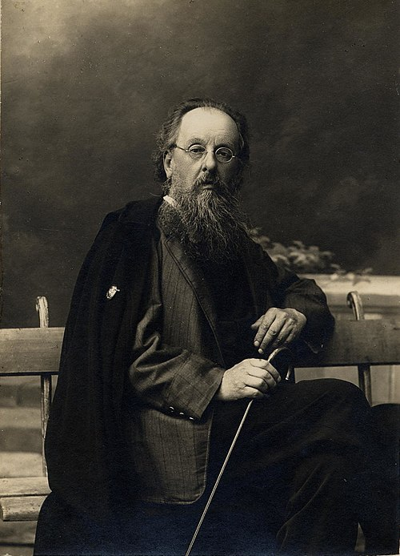
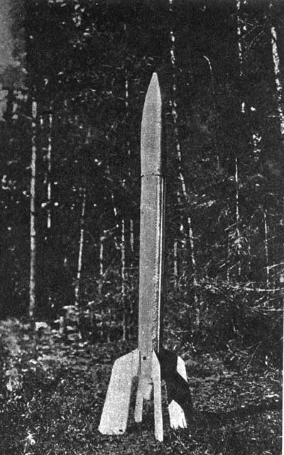

Всё начиналось задолго до первых спутников и полёта Гагарина. Ещё в конце XIX — начале XX века идея космических путешествий перестала быть только фантастикой и обрела научную основу. Русский учёный Константин Циолковский первым математически обосновал возможность межпланетных полётов с помощью ракет. В 1903 году он опубликовал труд «Исследование мировых пространств реактивными приборами», где не только доказал, что ракета — единственный аппарат, способный преодолеть земное притяжение, но и заложил основы жидкостных двигателей и многоступенчатых ракет. Многие его идеи — от космических лифтов до орбитальных станций — намного опередили своё время.
В те годы космонавтика была ещё не инженерной дисциплиной, а скорее смелым научным прогнозом. Работы Циолковского не находили немедленного практического применения, но они вдохновили целое поколение энтузиастов. В 1920–1930-е годы в разных странах появились группы людей, которые пытались превратить теорию в практику. В Советском Союзе эту эстафету подхватили выдающиеся учёные и инженеры:
- Фридрих Цандер — разрабатывал реактивные двигатели, предложил идею космических оранжерей для выращивания растений на борту корабля, мечтал о полёте на Марс. Ему принадлежит знаменитая фраза: «Вперёд, на Марс!».
- Юрий Кондратюк (Александр Шаргей) — независимо от Циолковского вывел основные уравнения движения ракеты, рассчитал оптимальную траекторию полёта к Луне. Его расчёты позже использовало NASA в программе «Аполлон».
- Сергей Королёв и Михаил Тихонравов — начинали с участия в первых ракетных кружках (ГИРД), чтобы спустя десятилетия стать главными создателями практической космонавтики

«Сначала неизбежно идут мысль, фантазия, сказка, а за ними шествует точный расчёт»
Этот путь от мечты к инженерному расчёту и стал тем самым «истоком», без которого невозможны были бы ни первый спутник, ни полёт Гагарина. Теоретические работы этих первопроходцев заложили фундамент, на котором впоследствии выросла вся советская космонавтика. Уже в 1930-е годы их идеи начали воплощаться в первых экспериментальных ракетах, открывших дорогу к звёздам. Именно тогда, в те годы, рождалось то, что спустя десятилетия назовут великой космической эрой.